ココシルデータ解析１-１
従業員 28 名を対象に，７月と10月の２回，繰り返しココシルスコアが測定された．同時に本企業では４月と10月に異動と昇進があり，その有無も紐づけられている．しかし，初回の測定は昇進の辞令発令後３ヶ月であるのに対し，２回目の測定は辞令があった当月である． この違いを考慮したモデルを複数フィットしてみる．
4/26/2025
昇格・降格との関連性と項目反応モデル
司馬博文
2/26/2025
ココシルを予測に使うことを考える． 昇格はココシルスコアに影響を与える可能性がある（さらに言えば３ヶ月前の残業時間も）． データ数の不足と，未知の説明変数が問題である． 既知の季節変動があったら，それも説明変数に入れたい．
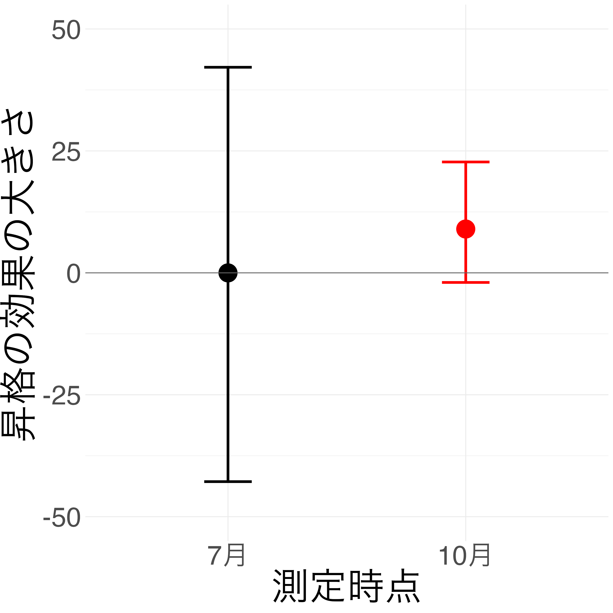
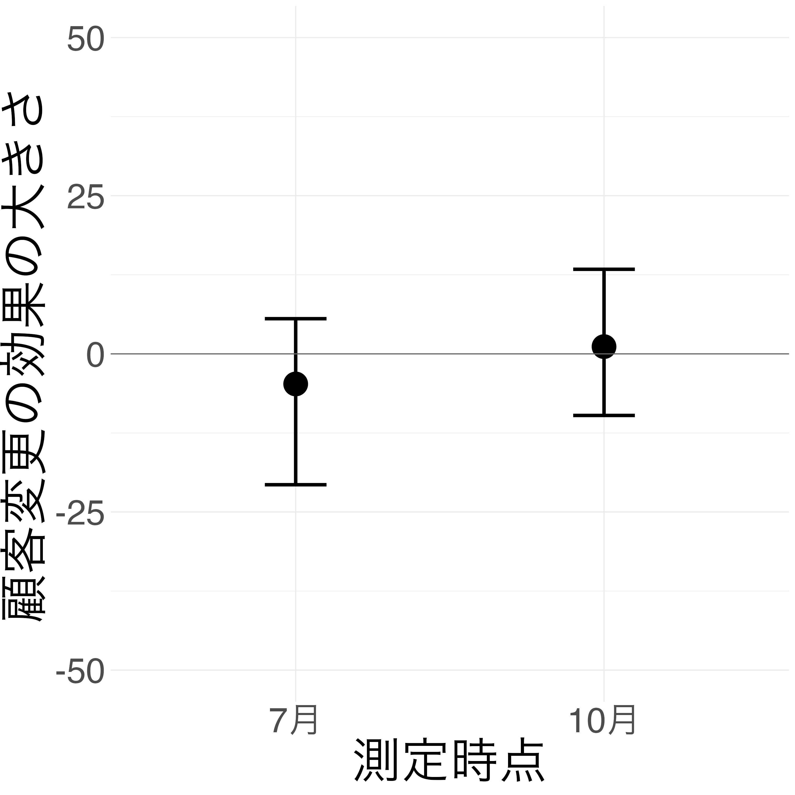
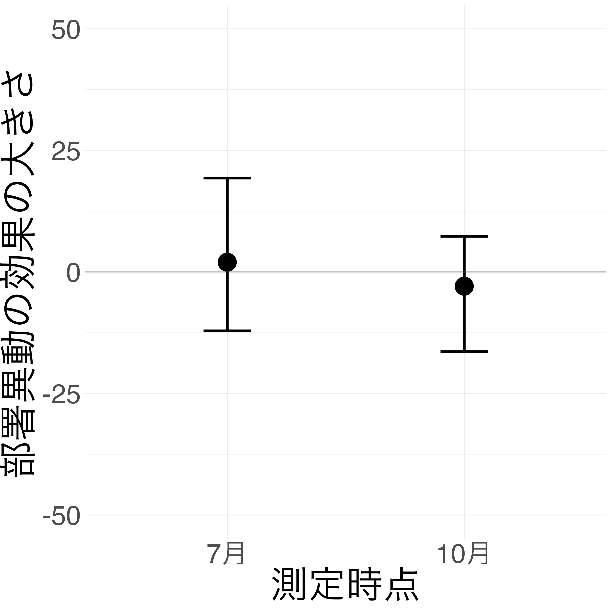
２回繰り返しココシル測定データを R に読み込んで整理する．
df <- df1[,c(1,2,4,116,117,118,120,121,122,137,138,129,130,131,133,134,127,128)]
colnames(df)[c(1,4,5,6,7,8,9,10,12,13,14,15,16,17)] <- c("id", "8月", "9月", "10月", "部署異動2", "昇降格", "顧客変更2", "BPCRE2", "4月", "5月", "6月", "部署異動1", "顧客変更1", "BPCRE1")
cols_to_convert <- c("部署異動1", "昇降格", "顧客変更1", "部署異動2", "顧客変更2")
df[cols_to_convert] <- lapply(df[cols_to_convert], function(x) {
# NAを0に、"〇"または"○"を1に変換
ifelse(is.na(x), 0, ifelse(x %in% c("〇", "○"), 1, 0))
})
kable(head(df))| id | 性別 | 年齢 | 8月 | 9月 | 10月 | 部署異動2 | 昇降格 | 顧客変更2 | BPCRE2 | スコア | 4月 | 5月 | 6月 | 部署異動1 | 顧客変更1 | BPCRE1 | 1回目スコア |
|---|---|---|---|---|---|---|---|---|---|---|---|---|---|---|---|---|---|
| 300 | male | 42 | 21.1 | 17.7 | 31.7 | 0 | 1 | 0 | 1.61 | 77 | 20.8 | 15.8 | 10.9 | 0 | 0 | 0.88 | 44 |
| 321 | female | 30 | 1.4 | 20.4 | 19.4 | 1 | 0 | 1 | 0.59 | 30 | 15.7 | 0.0 | 2.6 | 0 | 1 | 0.56 | 10 |
| 323 | female | 35 | 0.4 | 0.2 | 1.5 | 0 | 0 | 0 | 0.53 | 27 | 0.1 | 0.9 | 1.2 | 0 | 0 | 0.71 | 36 |
| 324 | male | 29 | 9.5 | 9.2 | 9.6 | 0 | 1 | 0 | 0.99 | 50 | NA | NA | NA | 0 | 0 | NA | NA |
| 325 | female | 26 | 6.0 | 14.6 | 40.2 | 0 | 1 | 0 | 1.03 | 52 | 5.4 | 24.8 | 32.5 | 0 | 0 | 1.24 | 62 |
| 326 | male | 47 | 18.2 | 17.0 | 11.2 | 0 | 0 | 0 | 0.52 | 10 | 18.7 | 18.0 | 18.8 | 0 | 0 | 1.06 | 10 |
library(tidyr)
df_long <- pivot_longer(
df,
cols = c("スコア", "1回目スコア"),
names_to = "測定時点",
values_to = "スコア値"
)
df_long$測定時点 <- ifelse(df_long$測定時点 == "スコア", 1, 0) # 0: 1回目, 1: 2回目
# 部署異動1と部署異動2を統合した新しい列を作成
df_long$部署異動 <- ifelse(df_long$測定時点 == 1,
df_long$部署異動2, # 測定時点が1（2回目）なら部署異動2の値
df_long$部署異動1) # 測定時点が0（1回目）なら部署異動1の値
df_long$顧客変更 <- ifelse(df_long$測定時点 == 1,
df_long$顧客変更2,
df_long$顧客変更1)
df_long$BPCRE <- ifelse(df_long$測定時点 == 1,
df_long$BPCRE2,
df_long$BPCRE1)
df_long$OT1 <- ifelse(df_long$測定時点 == 1, # OT: Overtime. 検査当月の残業時間
df_long$`10月`,
df_long$`6月`)
df_long$OT2 <- ifelse(df_long$測定時点 == 1, # OT: Overtime. 検査前月の残業時間
df_long$`9月`,
df_long$`5月`)
df_long$OT3 <- ifelse(df_long$測定時点 == 1, # OT: Overtime. 検査前々月の残業時間
df_long$`8月`,
df_long$`4月`)
df_long$昇降格 <- ifelse(df_long$測定時点 == 1,
df_long$`昇降格`,
0)
df_long <- df_long[, !names(df_long) %in% c("部署異動1", "部署異動2", "顧客変更1", "顧客変更2", "BPCRE1", "BPCRE2", "10月", "9月", "8月", "6月", "5月", "4月")]
kable(head(df_long))| id | 性別 | 年齢 | 昇降格 | 測定時点 | スコア値 | 部署異動 | 顧客変更 | BPCRE | OT1 | OT2 | OT3 |
|---|---|---|---|---|---|---|---|---|---|---|---|
| 300 | male | 42 | 1 | 1 | 77 | 0 | 0 | 1.61 | 31.7 | 17.7 | 21.1 |
| 300 | male | 42 | 0 | 0 | 44 | 0 | 0 | 0.88 | 10.9 | 15.8 | 20.8 |
| 321 | female | 30 | 0 | 1 | 30 | 1 | 1 | 0.59 | 19.4 | 20.4 | 1.4 |
| 321 | female | 30 | 0 | 0 | 10 | 0 | 1 | 0.56 | 2.6 | 0.0 | 15.7 |
| 323 | female | 35 | 0 | 1 | 27 | 0 | 0 | 0.53 | 1.5 | 0.2 | 0.4 |
| 323 | female | 35 | 0 | 0 | 36 | 0 | 0 | 0.71 | 1.2 | 0.9 | 0.1 |
# 各月の中央値を計算
monthly_medians <- df_months %>%
group_by(月) %>%
summarize(中央値 = median(値, na.rm = TRUE))
# 中央値のプロット
ggplot(monthly_medians, aes(x = 月, y = 中央値, group = 1)) +
geom_line(size = 1.5, color = "red") +
geom_point(size = 3, color = "red") +
theme_minimal() +
labs(title = "median trend",
x = "month",
y = "median")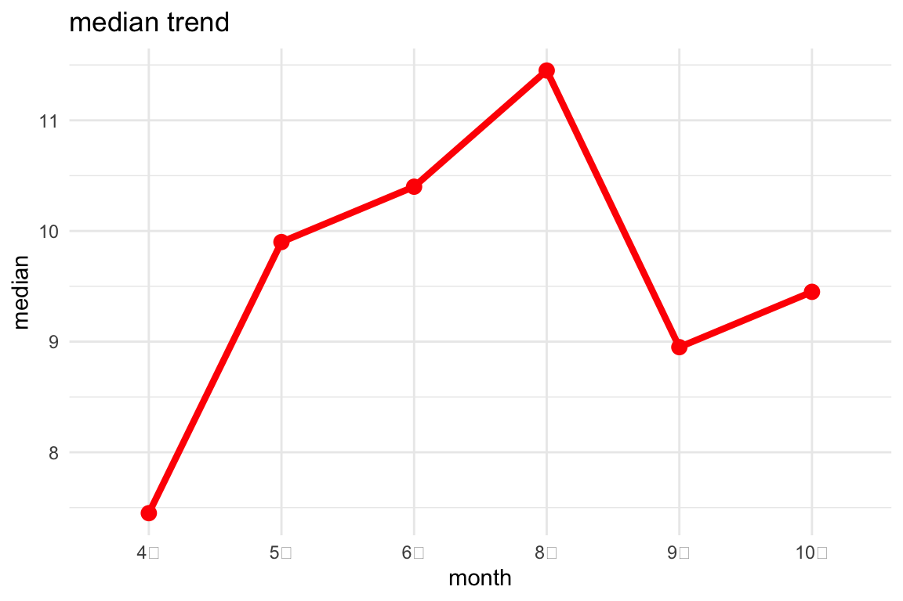
結構高確率で３ヶ月前の残業時間が負に働いているのはなんだ？残業をすると後々楽になってストレスが下がる？？
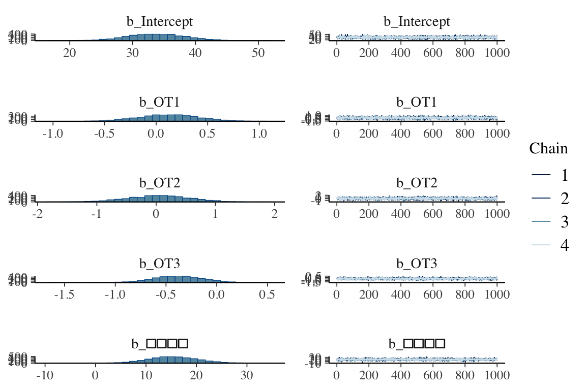
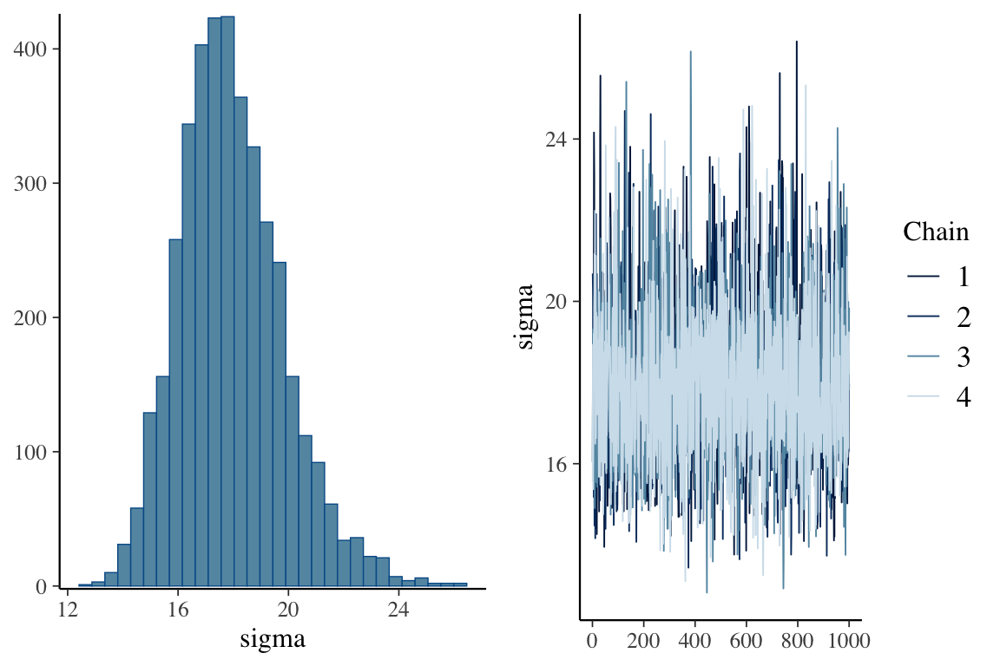
Family: gaussian
Links: mu = identity; sigma = identity
Formula: スコア値 ~ 1 + OT1 + OT2 + OT3 + 測定時点
Data: df_long (Number of observations: 54)
Draws: 4 chains, each with iter = 2000; warmup = 1000; thin = 1;
total post-warmup draws = 4000
Regression Coefficients:
Estimate Est.Error l-95% CI u-95% CI Rhat Bulk_ESS Tail_ESS
Intercept 33.73 4.71 24.60 43.04 1.00 4234 3347
OT1 0.13 0.30 -0.45 0.71 1.00 2874 2276
OT2 0.04 0.51 -0.98 1.02 1.00 2553 2618
OT3 -0.38 0.24 -0.85 0.09 1.00 3333 3032
測定時点 15.33 4.94 5.72 25.35 1.00 4112 2680
Further Distributional Parameters:
Estimate Est.Error l-95% CI u-95% CI Rhat Bulk_ESS Tail_ESS
sigma 17.94 1.88 14.74 22.26 1.00 3298 2775
Draws were sampled using sampling(NUTS). For each parameter, Bulk_ESS
and Tail_ESS are effective sample size measures, and Rhat is the potential
scale reduction factor on split chains (at convergence, Rhat = 1).Warning: No shared levels found between `names(values)` of the manual scale and the
data's colour values.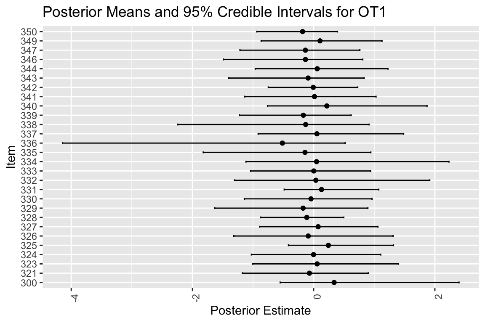
Warning: No shared levels found between `names(values)` of the manual scale and the
data's colour values.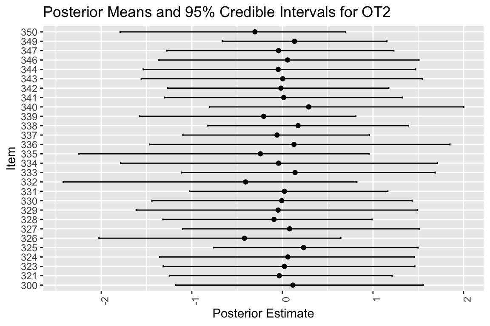
Warning: No shared levels found between `names(values)` of the manual scale and the
data's colour values.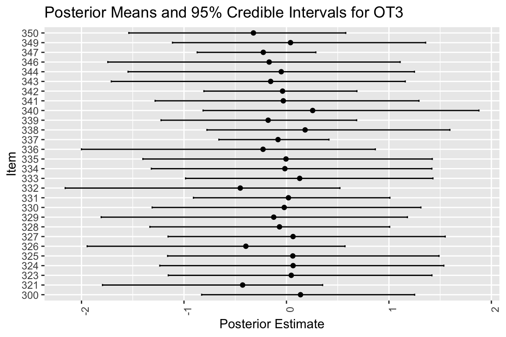
人によっては強く，過去の残業時間がストレスに影響を及ぼしている可能性があるが，エラーバーが長すぎる．やっぱ一人２回しか測定してないからね．
Warning: There were 1 divergent transitions after warmup. Increasing
adapt_delta above 0.8 may help. See
http://mc-stan.org/misc/warnings.html#divergent-transitions-after-warmup Family: gaussian
Links: mu = identity; sigma = identity
Formula: スコア値 ~ (1 | id) + 測定時点 + 顧客変更 + 部署異動 + 昇降格
Data: df_long (Number of observations: 54)
Draws: 4 chains, each with iter = 2000; warmup = 1000; thin = 1;
total post-warmup draws = 4000
Multilevel Hyperparameters:
~id (Number of levels: 28)
Estimate Est.Error l-95% CI u-95% CI Rhat Bulk_ESS Tail_ESS
sd(Intercept) 9.19 3.86 1.01 16.40 1.01 697 1115
Regression Coefficients:
Estimate Est.Error l-95% CI u-95% CI Rhat Bulk_ESS Tail_ESS
Intercept 30.52 3.88 22.80 38.18 1.00 3165 2475
測定時点 12.02 5.50 1.06 23.01 1.00 2962 2719
顧客変更 -0.32 6.61 -13.43 12.89 1.00 3046 2738
部署異動 0.29 6.89 -13.22 14.03 1.00 3384 2791
昇降格 10.49 6.98 -3.23 24.21 1.00 3002 3161
Further Distributional Parameters:
Estimate Est.Error l-95% CI u-95% CI Rhat Bulk_ESS Tail_ESS
sigma 15.39 2.19 11.58 20.15 1.00 970 1989
Draws were sampled using sampling(NUTS). For each parameter, Bulk_ESS
and Tail_ESS are effective sample size measures, and Rhat is the potential
scale reduction factor on split chains (at convergence, Rhat = 1).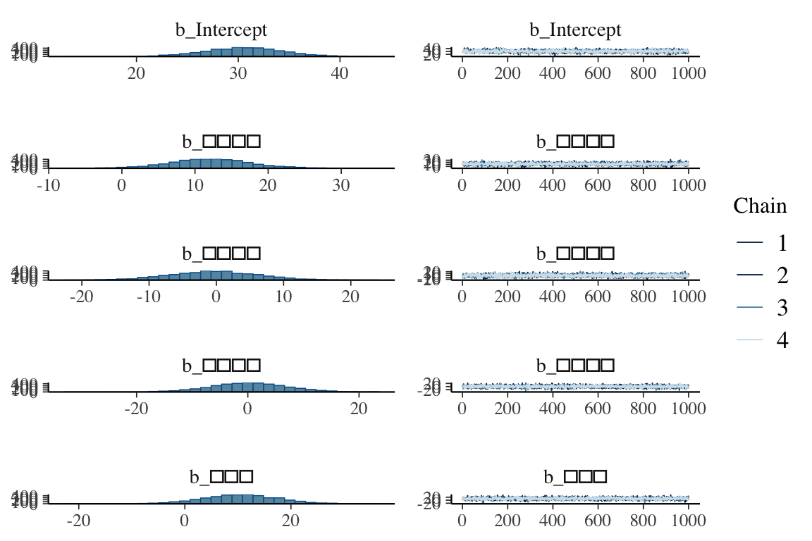
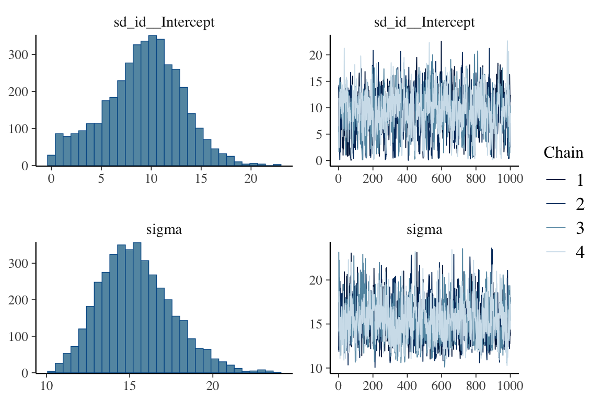
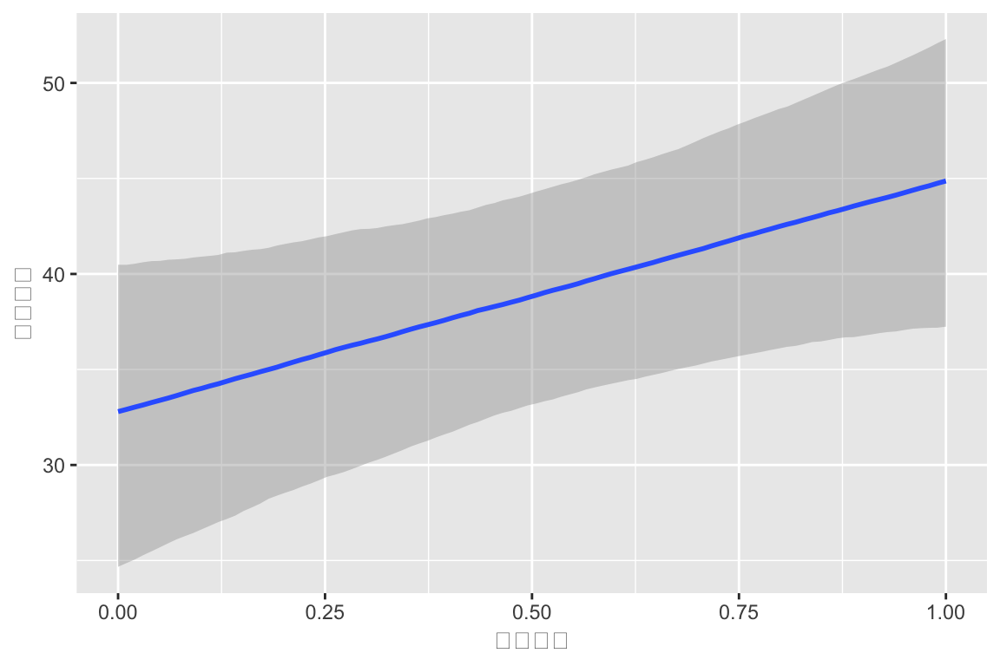
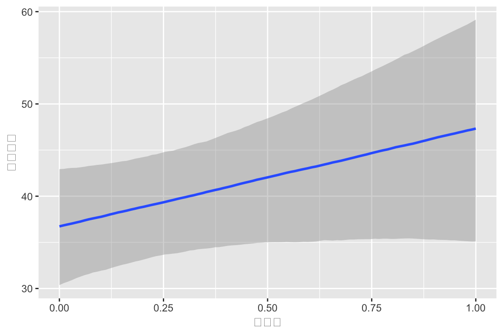
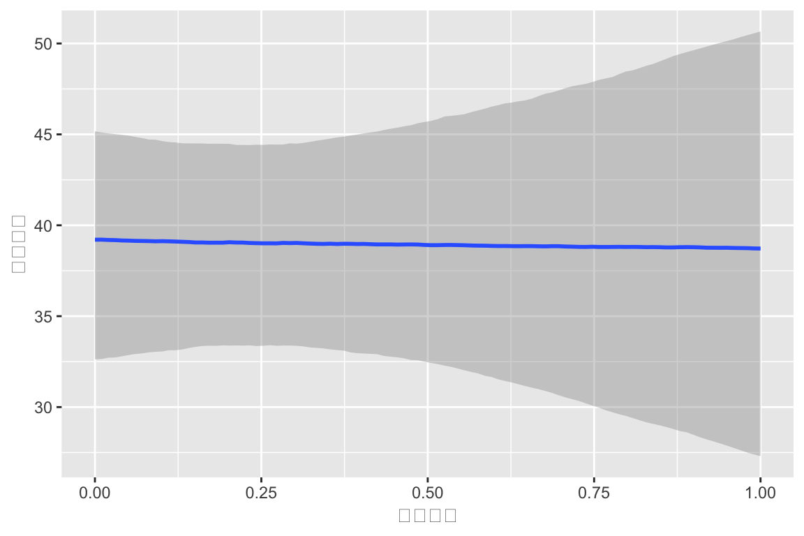
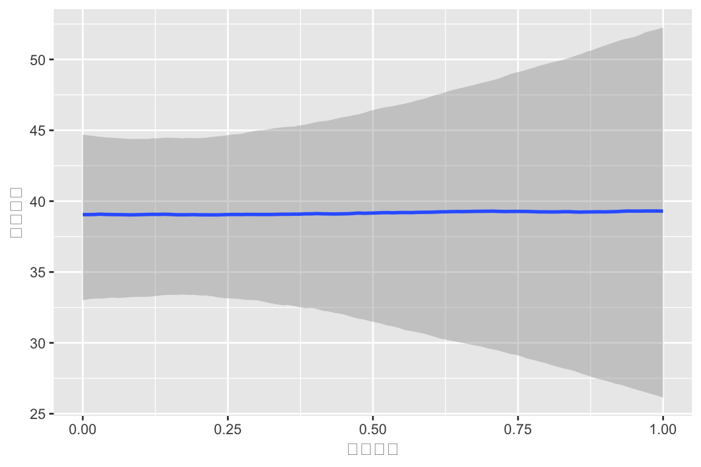
実際の心理学的研究でも、中間管理職への昇進はストレス要因となることが示唆されています。吉原らによる企業管理職115名の調査では、「昇進直後は当人もストレス自覚はあるものの、エゴグラム（自我状態診断）上のFree Child（自由な子ども）の得点が昇進後に有意に上昇する」と報告されています。これは、昇進によるプレッシャーを感じつつも、新たな役割の中で創意工夫や自己裁量が増しストレス対処スキルが向上したことを示唆する結果でした。つまり、昇進は心理的緊張を高める反面、モチベーションの向上や成長によってストレスへの対処力が養われる側面もあると言えます。
昇進の影響は遅れて出るのだろうか？昇進に適応できた群と出来ていない群に分離できるのだろうか？
昇進がストレッサーになることを，いくらか定性的に論じた論文はある (浩二 et al., 2002)．
昇進によって本人のモチベーションが上がり「良いストレス（eustress）」と感じている場合でも、身体的には交感神経亢進や活性酸素増加といった反応が起きるためUBPは増加すると考えられます。ポジティブな心理要因がある程度ストレスを相殺したとしても、生体指標としては昇進後しばらくは酸化ストレスが高まりやすい**と見るのが妥当です。
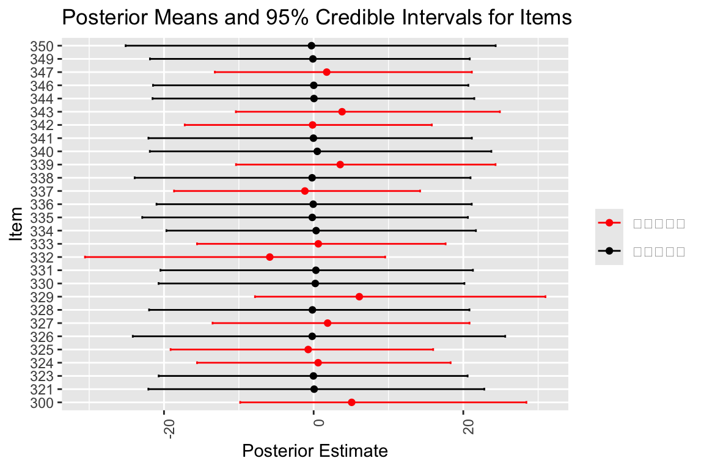
人毎に係数が違う可能性は十分にある．どういう解析ができそうだろうか？
ある研究では「冬と比較して、夏の方が唾液中のコルチゾール値が全体的に高く、日内リズムのピーク時刻も遅れる」ことが示されました．実際、ポーランドで若年女性を対象に行われた研究では、夏季（6月）にコルチゾールが有意に上昇し、炎症マーカーIL-6には差がなかったと報告されています。この研究は「寒い冬にストレスホルモンが増える」という従来のイメージに反し、「夏の方がコルチゾールレベルが高い」という興味深い結果となりました。研究者らは、暑熱環境が肉体的ストレスとなりコルチゾール分泌を高めた可能性を指摘しています。
かし、バイオピリンなど酸化ストレス指標については季節変動に関するデータはまだ限られているのが現状です。例えば大阪公立大学の研究では、助産師を対象に尿中バイオピリンと心理ストレス尺度を用いた横断研究を行いましたが、この中で著者らは「今後は測定時期や背景要因の影響も考慮する必要がある」と述べています。これは、ストレス指標としてバイオピリンを用いる際に、季節や時期による基準値の揺らぎにも注意すべきことを示唆しています。実際、酸化ストレス指標である8-ヒドロキシデオキシグアノシン(8OHdG)については、学生を対象とした研究でストレスが高い年度に上昇し、翌年度に低下する（ストレス軽減で酸化ダメージが減る）傾向が報告されています。季節変動そのものを直接検証した例ではありませんが、ストレス負荷が変われば酸化ストレスマーカーも変動することが示唆されており、季節要因による影響も十分考えられます。
また下期の開始や人事異動など職場の変化要因が多く、心理的ストレスが増えやすい。実際に炎症指標（CRP）が秋に高まったデータもある (Itoh et al., 2012)。
研究 (Itoh et al., 2012) は３人しか見ていないが，同じく日本の企業労働者で高感度 CRP を測定した研究であり，2月よりも10月の方が CRP が高いという結果を示している．
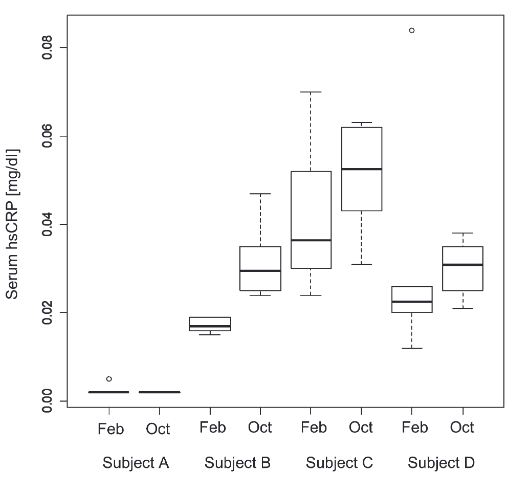
被験者は 43 名で，測定下限未満だったものが 6 名．よってデータフレームは 37 行．